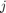
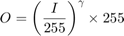

Brightness and contrast adjustments
In this demo we show how to perform the operation  .
.
Sources:
- https://docs.opencv.org/3.3.0/d3/dc1/tutorial_basic_linear_transform.html
- https://github.com/opencv/opencv/blob/3.2.0/samples/cpp/tutorial_code/ImgProc/BasicLinearTransforms.cpp
- https://github.com/opencv/opencv/blob/3.2.0/samples/cpp/tutorial_code/HighGUI/BasicLinearTransformsTrackbar.cpp
- https://github.com/opencv/opencv/blob/3.3.0/samples/cpp/tutorial_code/ImgProc/changing_contrast_brightness_image/changing_contrast_brightness_image.cpp
Contents
Theory
A general image processing operator is a function that takes one or more input images and produces an output image. Image transforms can be seen as:
- Point operators (pixel transforms)
- Neighborhood (area-based) operators
In pixel transforms, each output pixel's value depends on only the corresponding input pixel value (plus, potentially, some globally collected information or parameters). Examples of such operators include brightness and contrast adjustments as well as color correction and transformations.
For brightness and contrast adjustments, two commonly used point processes are multiplication and addition with a constant:
The parameters and are often called the gain and bias parameters; sometimes these parameters are said to control contrast and brightness respectively. You can think of as the source image pixels and as the output image pixels. Then, more conveniently we can write the expression as:
where and  indicates that the pixel is located in the i-th row and j-th column.
In the implementation below, instead of using a for-loop to access each pixel, we simply use the function cv.convertTo which effectively performs new_image = saturate(a*image + beta). This is more optimized than accessing each pixel and works a lot faster. Also notice that the operation can give values out of range or not integers (if is float), in which case cv.convertTo makes sure the values are valid.
Example
We will put into practice what we have learned to correct an underexposed image by adjusting the brightness and the contrast of the image. We will also see another technique to correct the brightness of an image called gamma correction.
Brightness and contrast adjustments
Increasing/decreasing the value will add/subtract a constant value to every pixel. Pixel values outside of the [0 ; 255] range will be saturated (i.e. a pixel value higher/lesser than 255/0 will be clamp to 255/0).

In light gray, histogram of the original image, in dark gray when brightness = 80 in Gimp
The histogram represents for each color level the number of pixels with that color level. A dark image will have many pixels with low color value and thus the histogram will present a peak in his left part. When adding a constant bias, the histogram is shifted to the right as we have added a constant bias to all the pixels.
The parameter will modify how the levels spread. If , the color levels will be compressed and the result will be an image with less contrast.

In light gray, histogram of the original image, in dark gray when contrast < 0 in Gimp
Note that these histograms have been obtained using the Brightness-Contrast tool in the Gimp software. The brightness tool should be identical to the bias parameters but the contrast tool seems to differ to the gain where the output range seems to be centered with Gimp (as you can notice in the previous histogram).
It can occur that playing with the bias will improve the brightness but in the same time the image will appear with a slight veil as the contrast will be reduced. The gain can be used to diminue this effect but due to the saturation, we will lose some details in the original bright regions.
Gamma correction
Gamma correction can be used to correct the brightness of an image by using a non linear transformation between the input values and the mapped output values:

As this relation is non linear, the effect will not be the same for all the pixels and will depend to their original value.

When , the original dark regions will be brighter and the histogram will be shifted to the right whereas it will be the opposite with $ gamma > 1$.
For the gamma correction, a look-up table can be used to improve the performance of the computation as only 256 values needs to be calculated once.
Let's an example of how to correct an underexposed image.
The following image has been corrected with: and  .
.

The overall brightness has been improved but you can notice that the clouds are now greatly saturated due to the numerical saturation of the implementation used (highlight clipping in photography).
The following image has been corrected with: .

The gamma correction should tend to add less saturation effect as the mapping is non linear and there is no numerical saturation possible as in the previous method.

- Left: histogram after alpha, beta correction
- Center: histogram of the original image
- Right: histogram after the gamma correction
The previous figure compares the histograms for the three images (the y-ranges are not the same between the three histograms). You can notice that most of the pixel values are in the lower part of the histogram for the original image. After , correction, we can observe a big peak at 255 due to the saturation as well as a shift in the right. After gamma correction, the histogram is shifted to the right but the pixels in the dark regions are more shifted (see the gamma curves figure) than those in the bright regions.
In this tutorial, you have seen two simple methods to adjust the contrast and the brightness of an image. They are basic techniques and are not intended to be used as a replacement of a raster graphics editor!
Additional resources
Code
function varargout = linear_transform_demo_gui(im) % load source image if nargin < 1 im = fullfile(mexopencv.root(),'test','lena.jpg'); img = cv.imread(im); elseif ischar(im) img = cv.imread(im, 'Color',true); else img = im; end % create the UI h = buildGUI(img); if nargout > 0, varargout{1} = h; end end function onLinearTransform(~,~,h) %ONLINEARTRANSFORM Event handler for UI controls % retrieve current values from UI controls a = get(h.slid(1), 'Value'); b = round(get(h.slid(2), 'Value')); set(h.txt(1), 'String',sprintf('Contrast: %.2f',a)); set(h.txt(2), 'String',sprintf('Brightness: %2d',b)); % linear transformation out = cv.convertTo(h.src, 'Alpha',a, 'Beta',b); % show result out = cv.putText(out, 'Brightness/Contrast Adjustment', [10 20], ... 'FontScale',0.5, 'Color',[0 255 0], 'LineType','AA'); set(h.img(1), 'CData',out); drawnow; end function onGammaCorrection(~,~,h) %ONGAMMACORRECTION Event handler for UI controls % retrieve current values from UI controls g = get(h.slid(3), 'Value'); set(h.txt(3), 'String',sprintf('Gamma: %.2f',g)); % gamma correction lookUpTable = uint8((((0:255)/255) .^ g) * 255); if true out = cv.LUT(h.src, lookUpTable); elseif mexopencv.require('images') out = intlut(h.src, lookUpTable); else out = lookUpTable(double(h.src) + 1); end % show result out = cv.putText(out, 'Gamma Correction', [10 20], ... 'FontScale',0.5, 'Color',[0 255 0], 'LineType','AA'); set(h.img(2), 'CData',out); drawnow; end function h = buildGUI(img) %BUILDGUI Creates the UI % parameters a = 1.0; % alpha gain (contrast) b = 0; % beta bias (brightness) g = 1.0; % gamma correction sz = size(img); sz(2) = max(sz(2), 300); % minimum figure width % build the user interface (no resizing to keep it simple) h = struct(); h.src = img; h.fig = figure('Name','Linear Transform Demo', ... 'NumberTitle','off', 'Menubar','none', 'Resize','off', ... 'Position',[200 200 sz(2)*2 sz(1)+80-1]); if ~mexopencv.isOctave() %HACK: not implemented in Octave movegui(h.fig, 'center'); end h.ax(1) = axes('Parent',h.fig, 'Units','pixels', 'Position',[1 80 sz(2) sz(1)]); h.ax(2) = axes('Parent',h.fig, 'Units','pixels', 'Position',[sz(2)+1 80 sz(2) sz(1)]); if ~mexopencv.isOctave() h.img(1) = imshow(img, 'Parent',h.ax(1)); h.img(2) = imshow(img, 'Parent',h.ax(2)); else %HACK: https://savannah.gnu.org/bugs/index.php?45473 axes(h.ax(1)); h.img(1) = imshow(img); axes(h.ax(2)); h.img(2) = imshow(img); end h.txt(1) = uicontrol('Parent',h.fig, 'Style','text', 'FontSize',11, ... 'Position',[5 5 130 20], 'String',sprintf('Contrast: %.2f',a)); h.txt(2) = uicontrol('Parent',h.fig, 'Style','text', 'FontSize',11, ... 'Position',[5 30 130 20], 'String',sprintf('Brightness: %2d',b)); h.txt(3) = uicontrol('Parent',h.fig, 'Style','text', 'FontSize',11, ... 'Position',[5 55 130 20], 'String',sprintf('Gamma: %.2f',g)); h.slid(1) = uicontrol('Parent',h.fig, 'Style','slider', 'Value',a, ... 'Min',0.1, 'Max',3, 'SliderStep',[0.01 0.2]./(3-0.1), ... 'Position',[135 5 sz(2)-135-5 20]); h.slid(2) = uicontrol('Parent',h.fig, 'Style','slider', 'Value',b, ... 'Min',-100, 'Max',100, 'SliderStep',[1 20]./(100+100), ... 'Position',[135 30 sz(2)-135-5 20]); h.slid(3) = uicontrol('Parent',h.fig, 'Style','slider', 'Value',g, ... 'Min',0.1, 'Max',3, 'SliderStep',[0.01 0.2]./(3-0.1), ... 'Position',[135 55 sz(2)-135-5 20]); % hook event handlers, and trigger default start opts = {'Interruptible','off', 'BusyAction','cancel'}; set(h.slid(1:2), 'Callback',{@onLinearTransform,h}, opts{:}); set(h.slid(3), 'Callback',{@onGammaCorrection,h}, opts{:}); onLinearTransform([],[],h); onGammaCorrection([],[],h); end